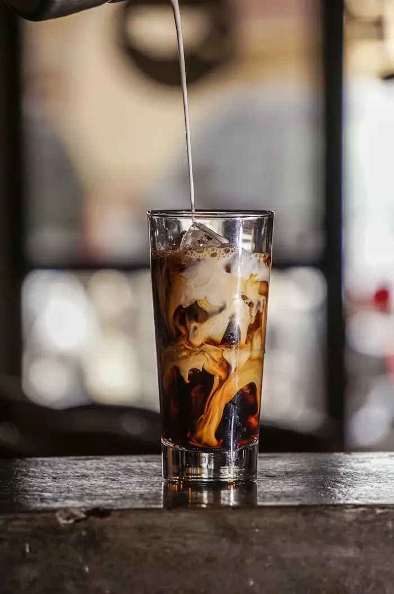

More Than Just Coffee
Founded in 2020 by a group of friends with a shared dream, The Cozy Bean Cafe was born out of a deep-seated passion for exceptional coffee and a desire to create a truly welcoming space for our YourTown community. We envisioned a place where a great cup of coffee was just the beginning of a wonderful experience.
From day one, our philosophy has been simple: quality above all. This means meticulously sourcing the best ethically-grown beans from around the world, partnering with local bakeries for the freshest pastries, and ensuring that every item on our menu is prepared with precision and care.
Keywords: local cafe YourTown, artisan coffee, ethical sourcing, community hub, passionate baristas
Our Commitment
Our baristas are more than employees; they are artisans, dedicated to the craft of the perfect brew. They're always excited to share their knowledge and help you discover your new favorite drink. Our bakers pour love into every delightful pastry and savory bite, ensuring they are fresh and delicious every single day.
The Cozy Bean is also a place for connection. We host local artist showcases, open mic nights, and workshops, striving to be a vibrant part of the YourTown fabric. We believe in giving back to the community that has embraced us so warmly.
Come in, relax, and enjoy the simple pleasure of a great cup of coffee in a friendly, inspiring environment. We can't wait to welcome you.